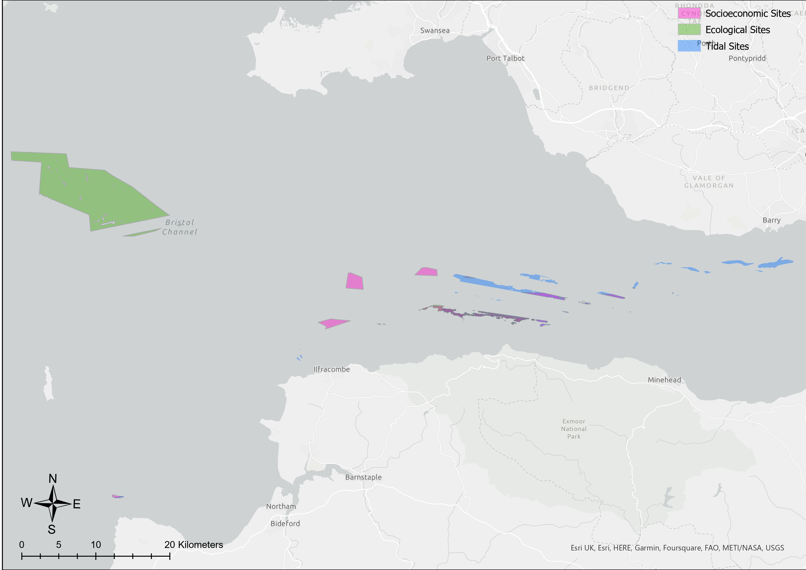
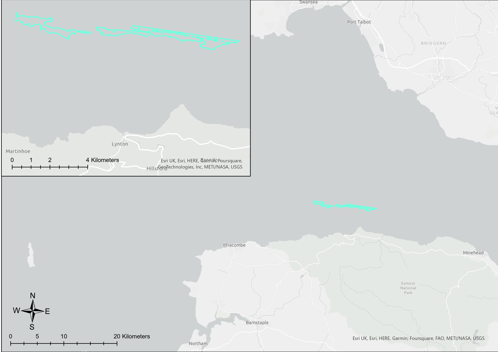
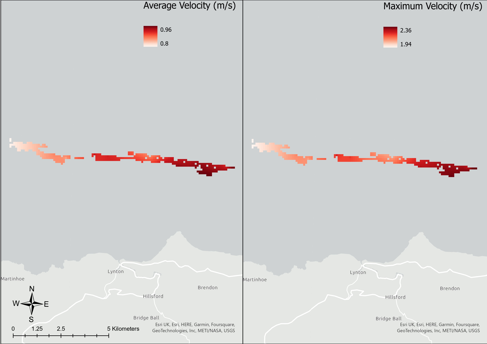

MASTERS RESEARCH PROJECT
Considering the UK’s
exceptionally high tidal resource, tidal power harnessed via tidal stream technology may be
a useful asset in achieving the net-zero goal.
ABSTRACT
This study examines potential sites in the Bristol Channel and Severn Estuary where tidal stream turbine arrays are best suited. For real-world practicality, this study assumes the
technology used would be a SIMEC-Atlantis AR1500 turbine. It uses a Multi-criteria-decisionmaking (MCDM) analysis via ArcGIS and introduces a number of constraints which are
grouped into Ecological, Physical, and Socio-economic categories, each prioritised over
three different analyses using an Analytical Hierarchy Process (AHP). Overlapping sites are
then investigated for their potential power output to determine the most efficient site in
the study area for turbine placement. It finds that the area most suited to this technology is
a 2 km2 area located to the North of Exmoor national park. With a potential maximum
power output of over 0.75 MW per turbine, an extensive turbine array in this location would
ensure that a substantial amount of power could be supplied to either the grid or local
settlements.
IMAGE GALLERY

Each of the three scenarios returned a range of potential sites which were spread across the extent of the study site, but mostly concentrated towards the Western portion. Due to the fact that the entirety of the Severn Estuary is designated as a Special Area of Conservation, the analysis was unable to return any sites within this area. Additionally, only a very small area within the Western part of the Estuary met the depth constraints, meaning that the
number of sites in this area would have been limited, and the presence of an ecologically protected area in this region did not significantly impact the availability of potential sites for the entire study area. Furthermore, Western areas of the Bristol Channel included SAC’s and SPA’s, so these automatically did not make the final selection due to the MCDM process
prioritising areas where the most constraints were satisfied. A large collection of sites sits in an area up to 11 km North of the coastline from Ilfracombe, stretching East and West across the extent of Exmoor (Fig. 1). Other sites include an area to the Northwest in the centre of the channel, an area roughly 20 km West of Northam, and area further North towards the coast, near the Welsh town of Barry.

The sensitivity analysis, in which the sites from all three scenarios were overlayed and the sites shared by all three remained, revealed a final output (Fig. 2). It shows the thin, longitudinal strip to the north of Exmoor, with several fragmented clusters in close proximity. To ensure the sites shown were practically suitable for the placement of a tidal turbine array, further processing to remove sites with an area smaller than 0.5 km2 was conducted by creating a new layer from a selection.

The power output was calculated for the peak maximum and average tidal velocity, and mean maximum and average velocity. The figure in the Eastern portion surpasses the West for both mean and maximum outputs in every single category. The mean values of maximum and average velocity were included in this analysis to provide a basis of knowledge for how an array of turbines would generate power in the entirety of either site. This was due to the areas where peak values for maximum and average velocity were identified taking up a very small portion of each site.